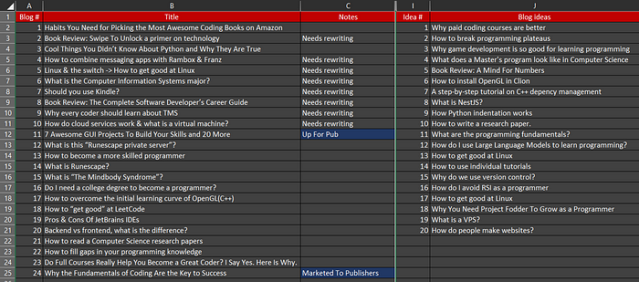

I want to introduce you to an idea. It defines a specific practice among the best developers. This is the secret sauce as to how to become your best developer.
Introducing Project Fodder
It is a concept as old as civilization. Let's define it in a word: "project fodder". But I am going to apply it to programming. The idea is to implement code by progressively overloading complexity. But wait—don't skip this chapter! Keep reading or you will miss it.
There is something special about programming. When you overload complexity your current skill set won't be sufficiently rewarding. The difference between programming and other skills is that the grand majority of your production will not be seen by others.

The Reward Problem
If you are doing it right—you will not naturally fulfill your desire for reward. This is the toughest part about programming. The fact that we receive little to no reward at the forefront but toward the end we are mass producing projects.
Project fodder therefore is source code without any external reward. They are programs which won't be seen and no one will care about.
Think of it this way—imagine you are at the gym. No one sees you weight lifting. No one sees the routines and daily 2 hour commitments. But, in 3 months what do you and your peers eventually see? The muscle. The programming skills. This is the mindset I recommend here.
Progressive Overload
The concept of progressive overload is key. You don't just build random projects. You build projects that are slightly harder than what you can currently do comfortably.
Here's the progression:
- Build a project at your current skill level (easy)
- Reflect on what you learned
- Build a slightly harder project
- Repeat
This progressive increase in difficulty is what drives skill growth. If projects are too easy, you don't learn. If they're too hard, you get frustrated. The sweet spot is just slightly beyond your comfort zone.
Why Project Fodder Works
Project fodder works because:
- No pressure: You're not trying to impress anyone, so you can experiment freely
- Full control: You decide the scope and complexity
- Immediate feedback: You see if your code works immediately
- Deliberate practice: You focus on specific skills you want to improve
- Consistency: Small projects done consistently beat occasional big projects
Examples of Project Fodder
Project fodder doesn't need to be complex or novel. Here are some good examples:
- A todo list application
- A calculator with different modes
- A simple game (Pong, Snake, etc.)
- A web scraper for a specific site
- A note-taking application
- A budget tracker
- A weather application
- A random quote generator
The key is that you're learning something new with each one. You're not just repeating what you already know.
The Real Secret
The real secret to becoming a great developer isn't watching tutorials or reading books. It's building things. Lots of things. Things that no one will ever see. Things that seem trivial.
Every great developer started here. They built small projects, then bigger ones, then bigger ones still. They didn't wait for the "perfect project idea". They just built.
Start Today
Pick a skill you want to improve. Pick a project that requires that skill. Build it. Don't worry if it seems too simple or too trivial. Your future self will thank you.
The #1 way to improve your skill is project fodder. Progressive complexity. Consistent building. That's the secret sauce.